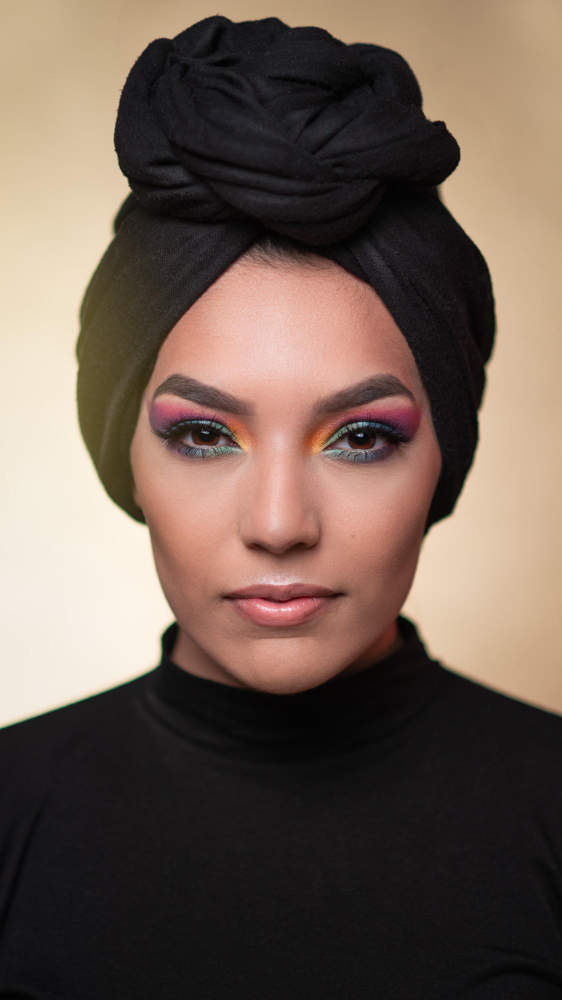

Hafsa Safia Almasri
A little bit more about me
I'm a 28 years old student with a passion for creativity and ambition.Outside of my studies I loev experimenting with digital art. This passion fuels my creative journey, helping me develop my skills in both art and design.I am always eager to learn and grow, and my ultimate goal is to combine my passion for creativity with technical proficiency in a career that allows me to push boundaries. I am excited about the opportunities to contribute to the creative industry in new and innovative ways.I believe in the power of creative collaboration and adaptability. I approach every challenge with a positive attitude, focusing on finding solutions while maintaining a high standard of work. I value continuous learning and always strive to improve myself.
Short-Sweet CV
Education
August 2016 - 2019:
Media and Communication
Nordahl Grieg High School in Bergen, Norway
Proficiencies
Customer service experience
Knowledge of makeup techniques and products
Creativity and originality
Flexibility and adaptability
Ability to stay calm under pressure
Proficiency in Adobe software (Photoshop, Illustrator, Premiere Pro, InDesign)